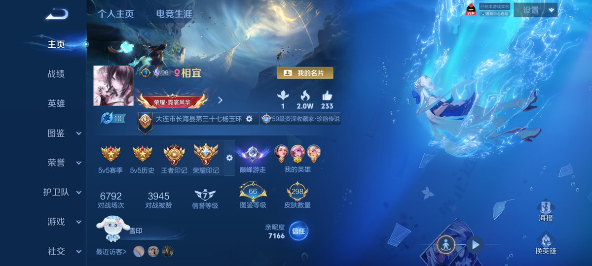

通过王者荣耀账号理论上有可能锁定个人信息。
但是我却没有看到任何一个喷子上心这件事情。
一个都没有。
一天时间下来，只有我一个人在派出所东奔西走，但是苦于信息限制，毫无进展

但是我却没有看到任何一个喷子上心这件事情。
一个都没有。
一天时间下来，只有我一个人在派出所东奔西走，但是苦于信息限制，毫无进展

如果谁有这位朋友的个人信息请联系我或者直接报警。
已知可能的信息
王者荣耀账号：常住地可能在大连市长海县
曾经到过武汉 https://t.co/Y9X8FRHGay https://t.co/OwYR4LR8UQ
已知可能的信息
王者荣耀账号：常住地可能在大连市长海县
曾经到过武汉 https://t.co/Y9X8FRHGay https://t.co/OwYR4LR8UQ